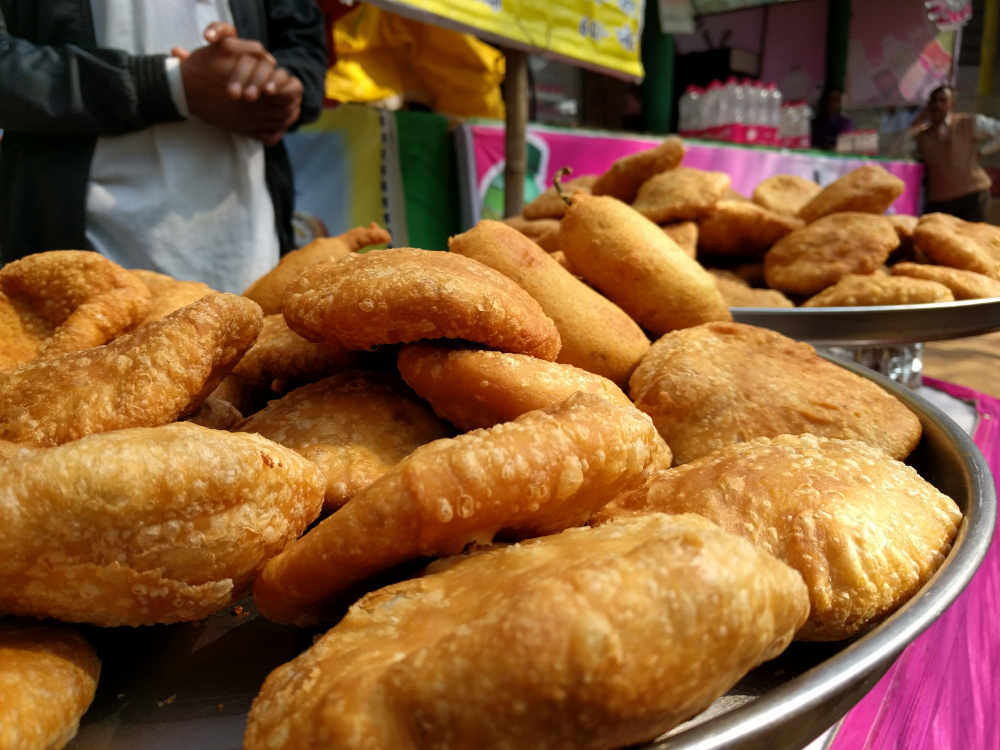
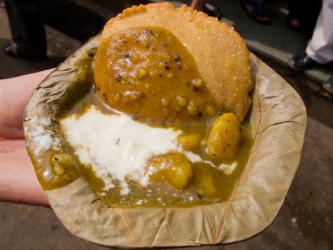
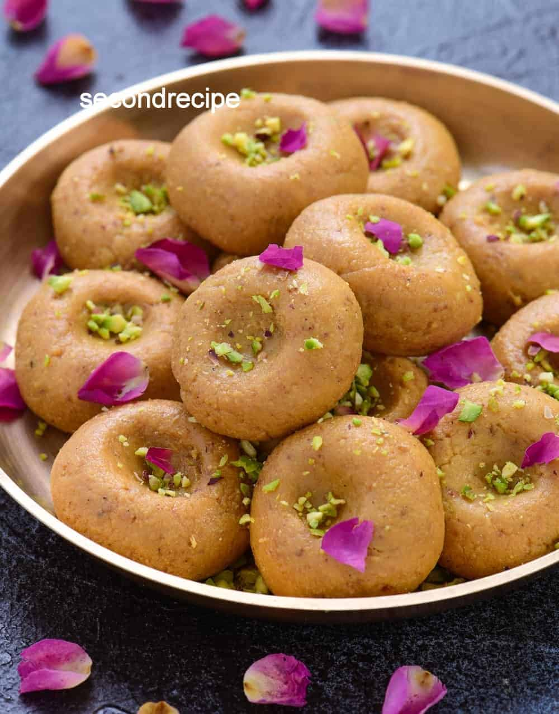
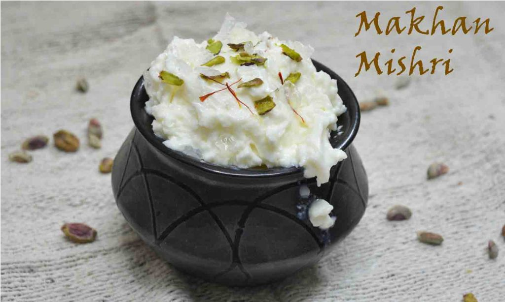
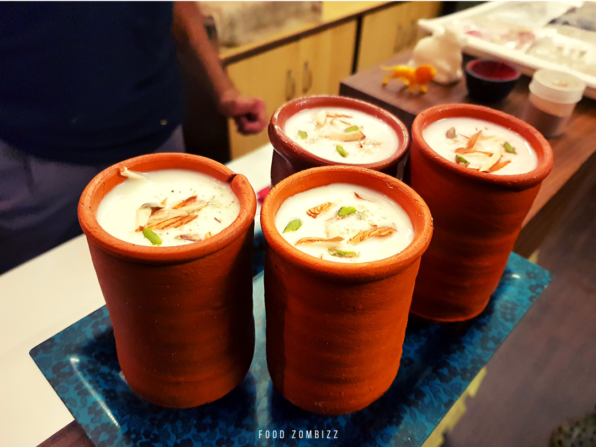
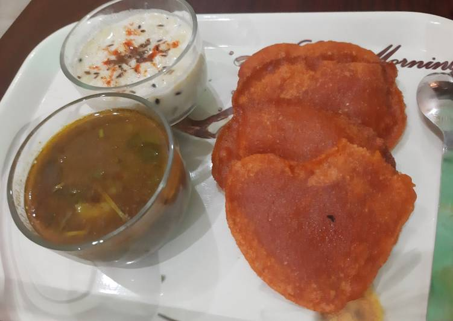
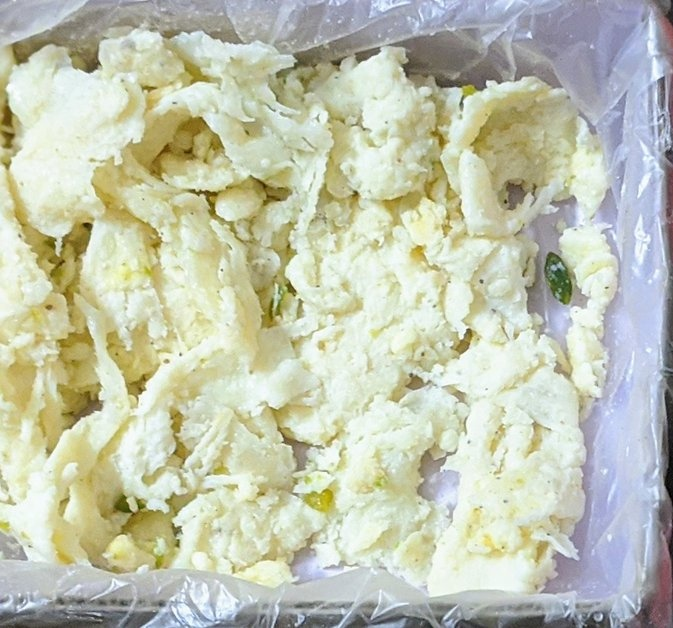

Bedai Kachori

Kachori in Mathura &Vrindavan is made with moong dal, and the scent of desi ghee drenched in it. There are varieties of kachoris served here, but the best one is with the filling of mawa and dry fruit. If you don’t like mawa and dry fruit, then need not to worry as lanes of Vrindavan offer a variety of kachoris, and each one has its specialty.

It’s a renowned dish in vrindavan , Bedhai is crispy, deep-fried, pure wheat chapattis served with spicy potato sabzi. For many people who live in these cities, it is the favorite lip-smacking breakfast option.
Peda

Vrindavan offers pedas of different shapes and sizes with different prices and flavors. Whenever you are planning to visit Mathura & Vrindavan don’t forget to carry a large packet with yourself to keep the boxes of pedas in it as you will not find the same pedas anywhere.
Makhan Mishri

Makhan Mishri is the favorite food of Lord Krishna, and the famous delicacyof Mathura & Vrindavan. It is served like prasad in the Banke Bihari temple in Vrindavan. It has fresh makhan on top and mishri cubes in the bottom.
Lassi

The lassi which is served in the earthen pot (kulhad), is a little different from what you have elsewhere. This lassi becomes a sinful affair due to the rich and thick layer of Malai and a heavy dose of dry fruit on the top.
Sabzi Pua

Preparations of veggies played around with spices, yogurt and tamarind makes Vrindavan cuisine a treat of flavoured, textured and cultured goodness. With a generous quantity of ghee (clarified butter) added to age-old recipes, the food and its flavours are unparalleled.
While each dish is unique, kaddu ki khatti sabzi and malpua stands distinctively for its combination of sour vegetable mash and sweet bread.
Kurchan

Khurchan is a delicious sweet made from milk. The top texture is a bit crisp, and the bottom layers are soft .
It’s not a sweet that you get everywhere. In fact, it’s becoming more and more difficult to find it, for it’s prepared so laboriously that few halwais want to spend their time on this. You get khurchan in BHARTI SWEETS, but the best khurchan, to my mind, is to be had a BRIJWASI's sweet shop in Bankebihari colony , Vrindavan.